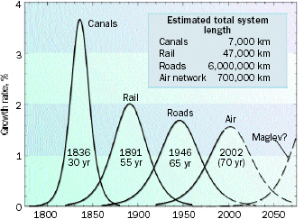

Перспективные транспортные технологии
Формулируются требования к перспективным транспортным технологиям, оценивается возможная роль участия государства в их появлении.
Тренд на либерализацию, обеспечивший конкуренцию на транспорте, в том числе и конкуренцию между разными видами транспорта, заставляет непрерывно искать технические и организационные решения, меняющие к лучшему облик транспортного мира. За последний десяток лет транспортные средства изменились чуть ли не на столько, сколько за предыдущие двадцать-тридцать лет.
Причины, которые заставляют меняться старые виды транспорта это давление со стороны как потребителей, так и политиков за:
· Мобильность (способность доставки от двери к двери;
· Экономичность (прежде всего КПД по топливу);
· Экологическую чистоту;
· Безопасность.
Выполнение всех этих требований весьма противоречиво. Так, утяжеление транспортного средства обычно повышает его безопасность для пассажиров и водителя, но ухудшает безопасность для других (более тяжелый транспорт причинит при столкновении больше ущерба) и увеличивает расход топлива, что ведет к ухудшению характеристик экономичности и экологичности. В системах общественного транспорта большая экономичность означает снижение мобильности до остановок приходится добираться.
Транспортная энергетика: электропривод
В большинстве видов транспорта работает тот или иной двигатель, и на сегодняшний день в большинстве случаев это
· Дизель,
· Двигатель внутреннего сгорания,
· Электродвигатель,
· Турбореактивный двигатель.
Электродвигатель по своим характеристикам лучше многих других приводов у него и устойчивость к переменным нагрузкам лучше, и обороты регулируются лучше (поэтому не нужно сложных систем передачи), и КПД лучше, и устроен он попроще (в нем, например, меньше движущихся частей, что ведет к большей наработке на отказ), к тому же он обходится дешевле (поэтому его можно ставить, например, на каждое колесо, а не иметь один на все колеса).
Другое дело, что электричество на борту является крайне дорогим источником энергии. Батарейки можно вообще не рассматривать, аккумуляторы на сегодня невероятно тяжелы и долго заряжаются, а заряда у них хватает на немного. Выходом является получения бортового двигательного электропитания из углеводородного топлива либо используя топливные элементы, либо гибридные решения.
Топливные элементы в качестве топлива используют водородсодержащее сырье в пределе это чистый водород (и тогда на выхлопе у них чистая вода), но есть варианты на метиловом спирте, природном газе, бензине и даже дизельном топливе. Их установочная стоимость пока еще довольно велика до $5000 за Квт мощности, а то и больше. Чисто водородные топливные элементы являются и самыми чистыми, но для них неоткуда брать водород: стоимость водородной заправочной инфраструктуры сильно превышает стоимость сегодняшней инфраструктуры заправки углеводородами (продуктами нефтепереработки и газом). Поэтому на краткосрочную перспективу более популярны так называемые гибридные схемы когда транспорт имеет как обычный двигатель, так и электрический.
Гибридные схемы воплощают в себе преимущества двух миров: мира обычных двигателей для получения электроэнергии и электродвигателя, используемого для привода колес. Обычный двигатель (дизель, внутреннего сгорания или даже газовая турбина) работает в оптимальном равномерном режиме и заряжает бортовой аккумулятор относительно небольшой емкости (много ниже, чем в электромобилях). А электродвигатель крутит колеса, работая в рваном режиме, зависящем от условий движения (ускорений и торможений, подъемов, грузоподъемности и т.д.). В результате динамические характеристики транспорта от использования электропривода существенно улучшаются с одной стороны, а экономичность и экологичность улучшаются из-за того, что обычный двигатель работает в оптимальном режиме.
FedEx - первая транспортная компания, решившаяся на эксперимент по массовому внедрению гибридных двигателей. Для начала будет закуплено 20 грузовиков с дизельно-электрическими двигателями, которые начнут работать в нескольких городах на территории США. Эксперимент продлится до конца 2004 года и в случае, если он окажется удачным, компания заменит в своем автопарке более 30 тысяч среднетоннажных грузовиков в течение 10 лет. Такие грузовики будут оборудованы новым гибридным дизельно-электрическим двигателем OptiFleet E700, разработанным корпорацией Eaton. Такой двигатель увеличивает эффективность расхода топлива на 50% и выбросы CO2 в атмосферу на 75%. Правда, гибридные грузовики будут немного дороже обычных главным образом из-за аккумулятора.
Гибридные схемы бывают самые разные: от одновременной синхронизированной компьютером работы электромотора и обычного двигателя на одном валу до полностью независимых газотурбинного двигателя, работающего на генератор и специальных электродвигателей, вмонтированных прямо в колеса. Все эти решения уже есть на рынке и конкурируют. Вопрос лишь в том, что иметь на борту сразу несколько мощных двигателей с высоким КПД (обычный, электрический мотор-генератор (как правило генератор тоже, использующий рекуперацию при торможениях), и иногда отдельный электрический генератор) всегда дороже, нежели иметь просто один двигатель. Преимуществом же являются лучшие ходовые характеристики, более низкий расход топлива и низкотоксичный выхлоп.
На данный момент преимущества гибридных автомобилей больше всего проявляются в тяжелых решениях грузовиках и автобусах, в которых экономия на топливе и экологические ограничения могут быть сильнее, нежели в легковых автомобилях. Поэтому основная конкуренция гибридных схем разгорается в этом секторе, а главным конкурентом пока остаются дизели.
Начиная с какого-то порога распространения гибридов произойдет их лавинообразное массовое внедрение: из-за политических изменений цены топлива. Сегодня в большинстве стран мира финансирование инфраструктуры автодорог происходит путем акциза на топливо. Новые автомобили будут потреблять минимум вдвое меньше топлива, следовательно для сохранения того же уровня финансирования инфраструктуры их должно или стать вдвое больше (но тогда и инфраструктуры должно быть профинансировано больше), или акциз должен увеличиться вдвое. Топливо при этом неминуемо подорожает, и для обычных автомобилей станет непомерно дорогим. Стоимость же собственно гибридных автомобилей упадет из-за эффектов масштаба производства. Поэтому начиная с какого-то момента внедрение гибридных автомобилей вместо неожиданно ставших дорогими в эксплуатации обычных пойдет лавинообразно ежели только не изменится текущая политика по финансированию дорожной инфраструктуры.
Государство подталкивает к гибридизации транспорта и постоянным ужесточением экологических норм. Начиная с какого-то момента обеспечить требуемую государством экологическую чистоту двигателя, работающего в тяжелых условиях изменяющейся дорожной нагрузки, становится очень дорого. Выходом является использование гибридной схемы, в которой двигатель работает в постоянно оптимальном режиме, в том числе и оптимальном с точки зрения минимизации вредных выхлопов. Гибридная схема позволяет использовать также газотурбинные двигатели, которые обеспечивают еще бОльшую экологическую чистоту.
Рынок готовится к вторжению гибридных автомобилей: на рынке уже есть отдельно специализированные электродвигатели до 350kW (применяются в тяжелых трейлерах и автобусах), новые типы электрифицированных колес с единой системой компьютерного управления, специализированные транспортные турбины и т.д.
Описание транспорта с движущими электродвигателями можно найти на портале http://www.evworld.com/
Железнодорожники оценили гибридную схему много раньше: поскольку им всегда была нужна большая тяговая мощность, то тепловозы представляют собой да, правильно, мощные гибридные тягачи, только поставленные на рельсы.
Важно отметить, что появление автомобилей-тепловозов означает переход к единой электроэнергетике и транспорту. Автомобиль или тепловоз с электроприводом это передвижная электростанция относительно большой мощности: гибридные энергоустановки для автобусов и трейлеров имеют пиковую мощность до 350kW, тепловозов более 1Мвт. Десяток таких трейлеров или пара тепловозов, отдыхающих между поездками, могут составить конкуренцию какой-нибудь резервной электростанции в районе и уж точно воплощают идею распределенной генерации. Осталось только откорректировать законодательство так, чтобы не мешать развитию распределенной генерации обязательным подчинением каждого небольшого генератора командам Системного Оператора. Тогда технологии смогут развиваться и быстро сделают выгодной совместную работу гибридного и электротранспорта и энергосистемы.
Эта связь энергетики и транспорта существовала всегда, сейчас она просто становится более очевидной. Так, Единая Европа так же, как и многие другие страны, имеет единое Министерство энергетики и транспорта, возглавляемое одним министром (http://europa.eu.int/comm/dgs/energy_transport/index_en.html).
Отдельно можно рассматривать быстро становящийся популярным линейный двигатель в поездах на магнитной подушке. Но схемы движения на магнитной подушке все еще крайне дороги, и этот вариант вряд ли станет популярным.
Требования к новому виду транспорта
Рис.1 Для США показаны годы пика темпов роста инфраструктуры и число лет роста с 10% до 90% общей протяженности путей.
Очевидно, что исторически возникла потребность в новом виде транспортной инфраструктуры, которая придет вслед за авиацией. Непохоже, чтобы это был транспорт на магнитной подушке (manetic levitation, maglev), как это предположено на рисунке.
Новый транспорт должен обладать развитой инфраструктурой инфраструктурой, предполагающей его повсеместность. Ежели эта инфраструктура не будет повсеместной, то не будет выполнено свойство мобильности.
Главным требованием к новому виду транспорта является возможность инкрементальности его финансирования: возможность принимать деньги из многих источников, каждый из которых вкладывается в свой проект. Это означает, что новый вид транспорта должен задаваться как множество стандартов, обеспечивающих совместимость его путевой и подвижной инфраструктуры, управления движением и т.д. Тогда можно обозначить две основных конкуренции:
· Конкуренция наборов стандартов, собственно и задающих новый транспорт.
· Конкуренция поставщиков элементов путевой инфраструктуры и подвижного состава в рамках одного набора стандартов.
Большинство нынешних проектов транспорта будущего не удовлетворяют условию инкрементальности инвестирования один производитель поставляет и дорожное полотно, и проводит строительные работы, и поставляет подвижной состав для разработанного им же набора стандартов. Поэтому у большинства современных проектов-кандидатов на транспорт будущего не будет продолжения, они умирают вместе с каждым очередным огромным траншем их финансирования.
Почему сотовые телефоны выиграли у обычных проводных АТС? Инвестиции оператора в одну-две соты были меньше, нежели инвестиции в постройку обычной АТС и устройства кабельной канализации. Эти инвестиции сразу начинали работать, обслуживая вначале небольшое число потребителей а число сот можно было наращивать в тех местах, где рост потребителей был выше, но не раньше момента исчерпания пропускной способности начальной соты. Оборудование сот поставлялось сразу многими производителями, что обеспечивало их низкую стоимость но слипалось в единую общемировую телефонную сеть. То же происходило с интернет-провайдерами: большинство провайдеров мира устанавливали маленькие комплекты оборудования, которые слипались в общемировую сеть Интернет. Для инфраструктурных проектов важна не столько стоимость конечной инфраструктуры, сколько возможность ее инкрементального построения как технического, так и организационно-финансового.
Нельзя говорить, что единый поставщик транспортного решения будущего обеспечит взаимоувязку всех частей огромного нового проекта. Проект, претендующий на то, чтобы стать новым видом транспорта, должен развиваться как новый рынок, а не быть построен плановым порядком. Плановым порядком могут делаться большие проекты, но не виды транспорта это явно не один проект, а нечто бОльшее.
Новый вид транспорта сможет выигрывать у уже существующих только в том случае, если обеспечит более эффективное использование земли и материалов для построения его инфраструктуры, нежели уже существующие. Отсюда такой большой интерес к монорельсам на опорах (elevated guideways) -- как минимум, их стоимость меньше на стоимость освобожденной под ними земли.
Монорельсовые линии в различных проектах стоят сейчас от $3.5 до $40млн. за километр пути. Уменьшение их материалоемкости требует принципиально новых решений. Так, можно указать на струнный транспорт Юницкого (www.unitran.ru), использующий для получения подвесного двурельсового пути некрученые натянутые парные тросы, стянутые по несколько штук каким-либо наполнителем (например, бетоном) в напряженную конструкцию. Стоимость такого пути -- $2.5-$3.5 за километр при неменьшей надежности, нежели у монорельса.
Еще одно принципиальное требование это максимальное использование существующей капиллярной автодорожной структуры для удешевления стоимости последней мили при перевозках от-двери-до-двери. Это удобство от двери к двери и отсутствие пересадок и делает личные автомобили вне конкуренции в глазах населения несмотря на многочисленные попытки привить любовь к общественному транспорту. Это требование может быть переформулировано следующим образом: транспорт будущего должен одновременно принадлежать к двум видам (dual mode), а не одному виду (single mode).
Рис. 2. Двойной вид транспорта в проекте RUF (www.ruf.dk)
Фактически все сегодняшние так любимые муниципалитетами большие проекты новых видов общественного транспорта являются одновидовыми, что доказывает их полную бесперспективность в качестве нового популярного транспорта будущего. Потребитель хочет иметь собственный экипаж, подъезжающий прямо к дому и находящийся около дома сколько угодно времени для удобства посадки и высадки (хотя вот гараж для такого экипажа может быть расположен и в другом месте). Пользоваться общественным транспортом потребитель не хочет, если есть возможность иметь свое собственное средство передвижения и гарантируется отсутствие пробок. И задача рынка удовлетворить эту его потребность.
Двухвидовый транспорт предполагает как возможность скоростного (200-300км/час) движения в режиме динамических составляемых поездов (platoons) на подвесных направляющих новой транспортной инфраструктуры, так и езду по обычным автодорогам. Вполне возможно, что они будут получать электропитание от транспортной инфраструктуры новых магистралей и переходить на собственные электробатареи или гибридные двигатели при передвижении по необорудованной автодороге/улице. Правда, движение по автодорогам/улицам будет не требовать такой уж большой мощности двигателя и запаса топлива, какая требуется при езде по шоссе.
Наиболее известной концепцией одновидового транспорта является персональный городской общественный транспорт (Personal rapid transit, PRT rapid transit переводится как городской общественный транспорт). Согласно этой концепции люди поодиночке или группами до 4-х человек садятся на специальных остановках в отдельные четырехместные кабинки, задают конечную станцию, и автоматика двигает эти кабинки по направляющим, объединяя в динамические поезда на длинных магистральных перегонах. Главным недостатком этой концепции является именно то, что это вариация именно общественного транспорта, проигрывающая в конкуренции частному автомобилю, доставляющему до двери и пассажира, и его семейство, и сопуствующие грузы. Подробнее материалы дискуссии о двухвидовости против одновидовости транспорта будущего (как и обсуждение возможных технических и организационных решений) можно почитать на http://faculty.washington.edu/jbs/itrans/
Требования двувидовости отменяют также прогноз о том, что будущее транспорта за небольшими персональными самолетами. Этот прогноз уже не оправдался с вертолетами (которым тоже предрекали распространенность чуть ли не автомобильную), а уж о самолетах (в том числе с вертикальным взлетом/посадкой) пока и говорить не приходится. Дело тут не только в сложности управления движением тысяч и тысяч быстролетящих вне всякой дорожной структуры бортов, но и в производимом при взлете/посадке/пролете шуме, а также получающейся стоимости проезда. А двувидовые проекты летающих автомобилей, реализующих режим от двери до двери практически повсеместно заморожены ввиду полной бесперспективности.
Важным требованием к новому виду транспорта является скорость обычно эту скорость определяют в 250-350км/час. Дело в том, что люди тратят на перемещение в среднем примерно один час в день. Эта цифра не слишком зависит от страны (отличаясь существенно только в Калифорнии там люди проводят в день в пути два часа, ибо они и едят и делают детей и вообще почти живут в автомобиле) и не зависит от лет, когда проводятся замеры. Это удивительно, но человечество не меняет своих привычек тратить на передвижение около часа в день, существенно увеличив свою мобильность преимущественно за счет увеличения скорости передвижения. И назад в лошадность, пешеходность и велосипедность возврата уже нет. Поэтому весьма маловероятно, что транспортом будущего будут являться устройства типа двухколесного электромобиля Segway крошечной платформы, которая может развивать в условиях города скорость до 20 км/час (скорость бегущего человека). Да, это поможет в условиях нынешних городских пробок, но сама идея нового транспорта возникает как раз из необходимости найти технологический выход из покрытия всей земли автомобильными дорогами.
Наиболее близко к требуемым скоростям подошли проекты скоростных железных дорог и дорог на магнитной подушке но их цена остается крайне велика, к тому же они обладают всеми недостатками общественного транспорта: добраться до точки посадки и от точки высадки занимает времени (и нервов) много больше, нежели сам переезд.
Бизнес и государство: кто из них обеспечит новый транспорт
Основное финансирование сегодняшние проекты транспорта будущего получают от государства.
Одним из первых таких проектов был проект по созданию летательного аппарата тяжелее воздуха, который обошелся налогоплательщикам США в $70 000 и закончился ничем. С этим проектом конкурировали браться Райт, которые и смастерили первый летающий самолет, обошедшийся им в $2500. Последний шумный транспортный проект, закончившийся столь же бесславной растратой денег налогоплательщиков сверхзвуковой лайнер Конкорд, не окупишвий две трети своей стоимости и так и не создавший массового рынка сверхзвуковой пассажирской авиации.
Увы, но государство не слишком большой помощник в создании транспортной инфраструктуры будущего:
· чиновники проводят финансовую и регуляторную политику, которые позволяют выживать неэффективным технологиям и безбедно существовать плохим менеджерам и инженерам;
· предписанные государством тарифы (в силу неверного понимания естественной монопольности любого транспорта) делают прибыль независимой от результатов работы, не стимулируют поиск новых технологий и взятие на себя технологических и финансовых рисков. В результате частный капитал либо не слишком стремится поучаствовать, либо его участие менее эффективно, чем было бы участие капитала в условиях свободных цен и рыночной конкуренции.
Государство обильно финансирует разработки нового транспорта, ибо чиновники якобы знают о технологиях лучше, чем бизнесмены:
· распределяют деньги на исследования
· дают льготы, субсидии и организовывают кросс-финансирование некоторых технологий
· нарушают подход регулирования безопасности и экологичности по результатам (performance-based) и непосредственно предписывают использование тех или иных технологий
На сегодня, единственный реализованный проект поезда на магнитной подушке существует в свободной экономической зоне Шанхай. Трасса, построенная на госудорственные деньги немецким консорциумом Transrapid International (в который входят Adtranz, Siemens и Tyssen) пролегает от делового центра Шанхая аэропорта Пудон. По общему признанию, проект имел скорее идеологическое, чем транспортное значение и воспринимается больше как аттракцион, чем как средство передвижения. В общей сложности, этот проект обошелся в 1.2 миллиарда долларов инвестиции, которые никогда не окупятся.
Аналогичный проект предполагает соединить американскую столицу развлечений, Лас Вегас, с городом Анахейм в южной Калифорнии. Проект изначально не получил одобрения федеральных властей из-за рекордной стоимости ($10 миллиардов за 269 миль), Несмотря на это, лоббистская кампания вокруг него только усиливается. В начале мая2003г. Федеральная Служба Железных Дорог США (Federal Railroad Administration) выделила полтора миллиона долларов на экологические исследования, связанные с этим проектом.
В итоге государство выбирает технологии:
· дорогие ибо рыночный успех неважен (выручает не просто возможность установить любые тарифы, а возможность последующего их субсидирования)
· крупномасштабные доступны крупные суммы денег, а успешность некому контролировать
· с одним собственником затрудняет поиск денег для роста проекта. Кроме того, один собственник это отсутствие конкуренции.
· закрытыми стандартами присоединения затрудняет рост проекта, отсутствие конкуренции обеспечивает стагнацию
· с заранее завышенными затратами, в силу распространенности коррупции
· с непонятной экономической эффективностью (чаще всего во имя национальной безопасности или социальной стабильности).
В ближайшее время Boeing начнет поставки военным самолета с вертикальным взлетом V-22 Osprey, разработанного совместно с Bell Helicopter. Это конвертоплан, винты на крыльях которого разворачиваются вверх, обеспечивая подъемную силу для взлета с любой поверхности. Теоретически, при массовом применении для гражданских целей это могло бы позволить существенно снизить стоимость аэропортов. Однако грузоподъемность такой машины невелика - всего 7,3 тонны. Для сравнения, грузоподьемность российского транспортного вертолета Ми-26 составляет 20 тонн, а наиболее массового транспортного самолета Ил-76 -- 43 тонны.
Интересно, что разработка и внедрение V-22 Osprey сопровождалось скандалом: после двух катастроф на испытаниях, в которых погибли в общей сложности 23 человека, Главное Управление Учета США (General Accounting Office ) начало расследование, в ходе которого были найдены подтверждения того, что некие заинтересованные лица лоббировали программу по замене устаревшей вертолетной техники на машины Osprey - стоимость программы составляет около 40 миллиардов долларов. Впрочем, какая разница, какая стоимость программы? У военных решение принимает не рынок, а узкий круг лиц у рынка и рыночных инвесторов попробуй, пойди полоббируй...
При сегодняшнем положении вещей частные инвесторы не вкладывают ни копейки в проекты нового транспорта (разве что в надежде получить какое-либо госфинансирование или урвать кусок рынка, возникающий от изменения госрегулирования например, госрегулирования стандартов загрязнений). Но если государство прекратит финансирование новых транспортных проектов и даст свободу рыночной конкуренции в секторе (выведет транспорт из сферы действия законодательства о естественных монополиях), то рынок выберет другие технологии:
· дешевые и окупаемые ибо интересует быстрый захват рынка малыми деньгами, нет возможности субсидирования
· масштабируемые рост только при доказуемости успешности, зато непрерывный за счет присоединения участников
· допускающие инкрементальные инвестиции и на базе открытых стандартов, это дает
o много собственников деньги приходят из разных источников, легче их поиск, меньше риски, больше возможный масштаб возникающей новой инфраструктуры.
o конкуренцию поставщиков для непрерывного снижения цены при росте качества, а также наращивания предложения.
Управление движением
Каким бы он ни был, транспорт будущего обязательно будет оборудован средствами распределенного управления движением борт-инфраструктура. На каждом борту будет стоять черный ящик для понимания того, что произошло во время аварии, на каждом борту будет оборудование выдачи сигнала бедствия, на каждом борту будет электронное навигационное оборудование, средства предотвращения столкновений и т.д. Сейчас идет переоборудование водного и воздушного транспорта, обсуждается переоборудование автотранспорта.
Из новинок можно будет указать на возможность формирования поездов из отдельных транспортных средств (platoon mode). Этот режим автопоезда электронной сцепки используется, например, для одновременного ускорения группы машин при старте после светофора на одноуровневом пересечении дорог (повышает пропускную способность магистрали в 3-5 раз) или для снижения аэродинамического сопротивления группы машин при движении по автостраде с соответствующим снижением расхода топлива.